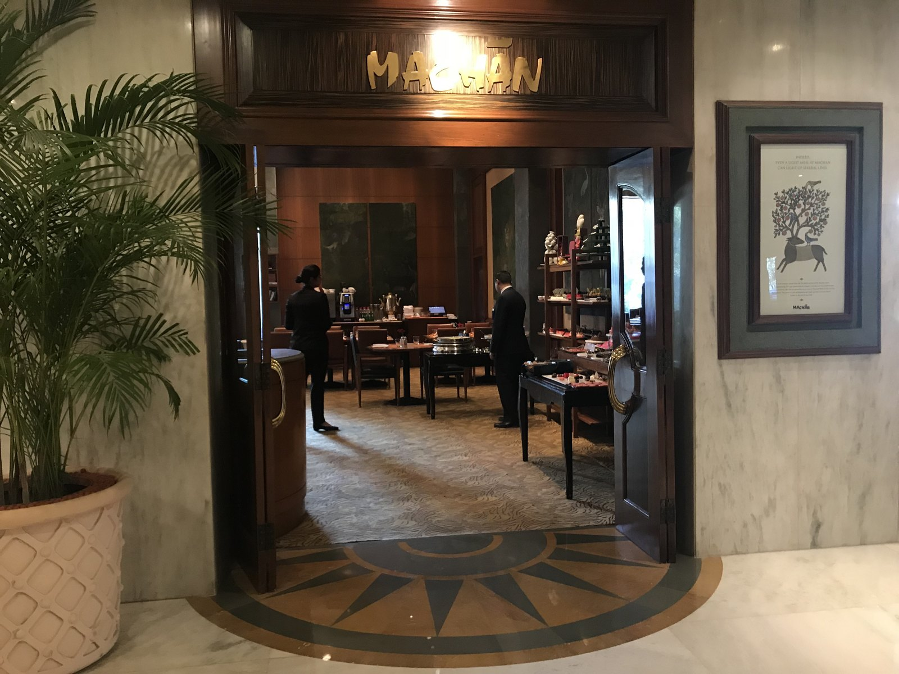
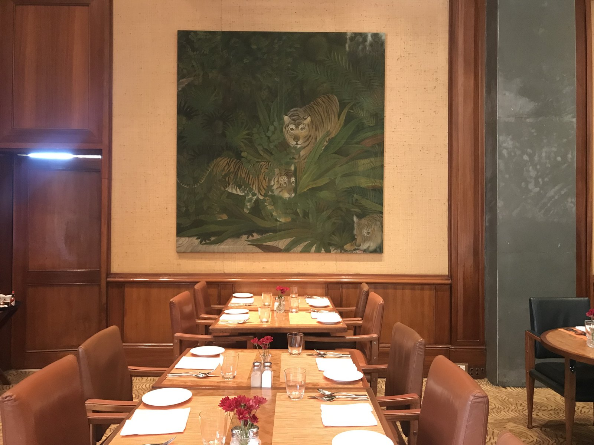
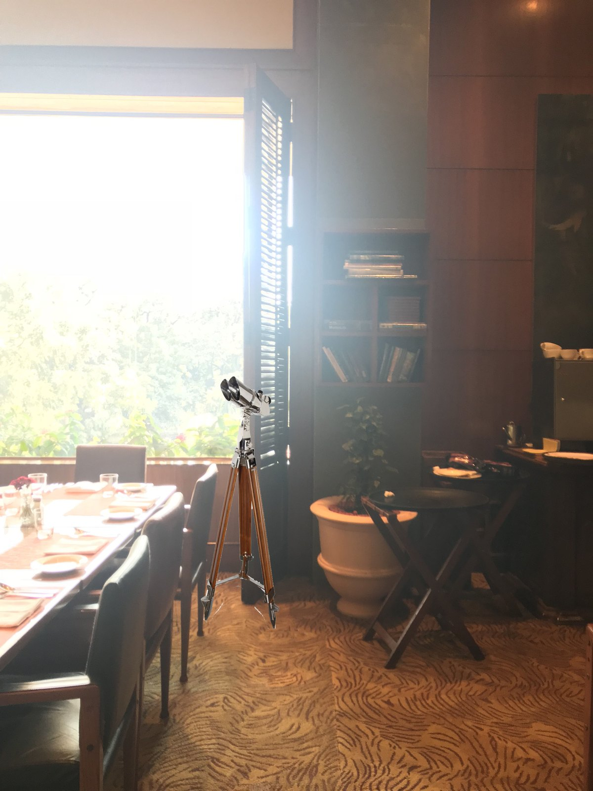
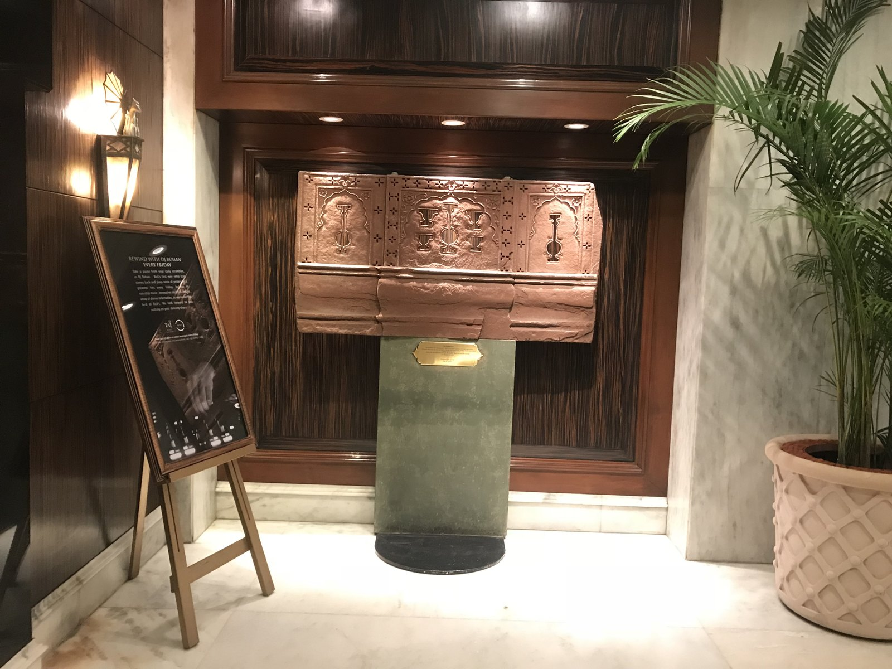
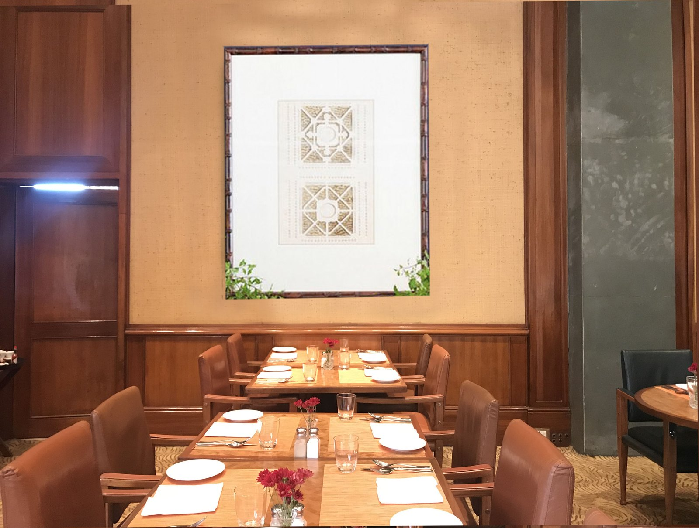
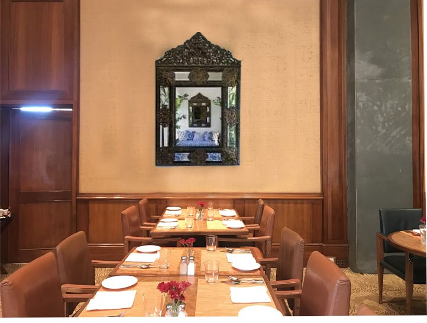

09Related Work
An art & installation programme for the Taj's all-day diner — named for the hunter's treehouse, and set in the spirit of an adventurous young British officer of 1933, at the height of the colonial Raj.

Machan is the all-day diner at The Taj Mahal Hotel, New Delhi. A machan is the raised platform from which British and Indian royalty watched their hunts; the restaurant takes its name, and its mood, from that world. The brief was to bring out the sentiment and theme of Machan — the essence of the British colonial era — in a way that kept the grace and identity of the property but gave it a fresh new look.
The work proceeded as an art & installation programme across the room: entrance, pillars, artworks, centre pieces, windows and furniture, each treated as an opportunity to tell the same story.
To evoke an empire's indulgences without building a museum of them.
The machan was used by a select, influential few; the challenge was to encapsulate the mystery of that world — adventure, wildlife, old-world charm, 1933 — while keeping the restraint a Taj room demands. The figure who directed the design was an adventurous young British officer of 1933, when the Empire spent more time than ever in indulgences such as hunting.
The vocabulary was set on a moodboard — colonial portraiture, wildlife, ceramic, mirror, blue-and-white and a tropical glamour. From there the room divided into areas of opportunity: green pillars shadow-boxed with binoculars, telescopes and mirrors; artworks farmed from across the colonies in black and white; wire-lantern centre pieces on the tables; brass lanterns hung by the shuttered windows.
Each cue was rendered onto the room itself, so every proposal could be read in place — against the mahogany, the marble and the light.





The hunter's room, restated as a collector's.
The programme reads the colonial theme through the eye of a collector rather than a coloniser — wildlife observed and painted, instruments shadow-boxed like specimens, plates framed and hung. Copper raised in relief and brass at the windows hold the warmth; the tiger wall holds the wit.
A complete suite of cues was delivered across the room — the wildlife wall, the copper relief, the colonial plate series, the shadow-boxed pillars, the lantern centre pieces and the window treatments — each carrying the same 1933 story, in mahogany, brass and old-world charm.